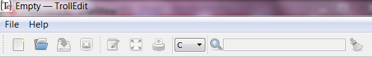
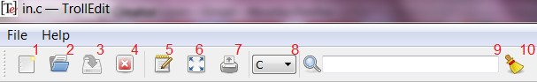
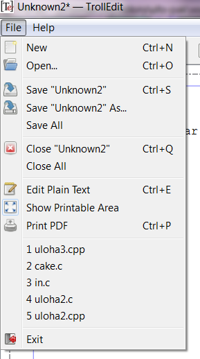
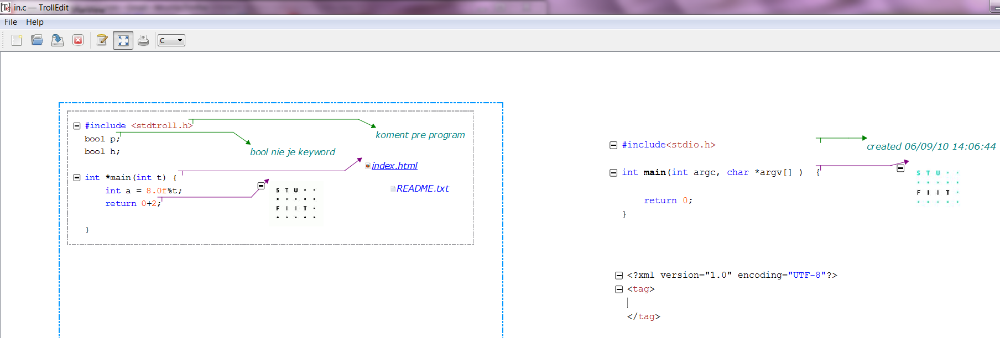
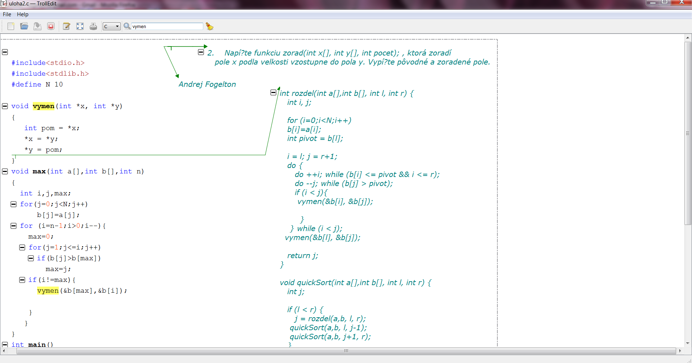
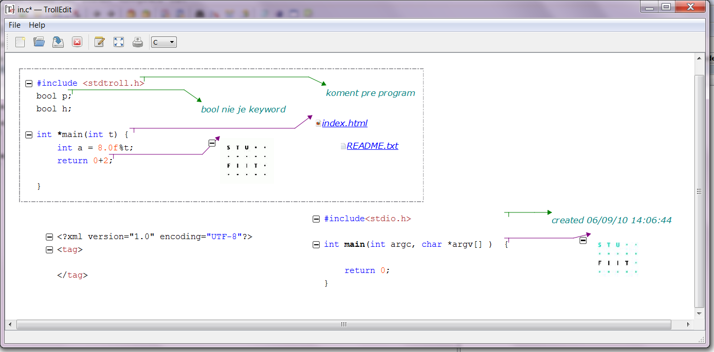

TrollEdit Manual
TrollEdit Manual
A manual how to use TrollEdit.
TrollEdit features
- Multiplatform editor
- Extensible for any language (proper grammar needed)
- Documentation block support
- Graphics visualization
- Images support
- Syntax control and highlighting
- Multidocument support
Table of Contents:
- Toolbox
- Shortcuts
- Documentation blocks
- Syntax highlighting
- Printing
- Searching
- Block folding
- Multidocument
up
Toolbox
Control panel contains the main functions to work with editor:


- Create new file
- Open file
- Save file*
- Close file*
- Plain text editor*
- Show printable area*
- Print to pdf*
- Explicitly set the language grammar
- Search bar*
- Clean search results*
* These functions are available only when a document is selected.
Similar options can be found in the FILE menu

up
Shortcuts
Ctrl + wheel moving - resizing file
Ctrl + wheel double click - changing to the default size of the selected file
Ctrl + left click - adding a comment to the selected block of code (an arrow will be created between them)
Ctrl + Delete - deleting a block
Ctrl + N - creating new file of the selected type
Ctrl + O - openning a file
Ctrl + S - saving selected file
Ctrl + Q - closing selected file
Ctrl + P - printing selected file
Ctrl + E - showing plain text editor with special markers for documentation blocks
Ctrl + L - autoindent
Left double click on link - opening given document with external editor or hyperlink with the browser
up
Documentation blocks
There are several types of documentation blocks:
- Comment
Every comment is a documentation block. A new comment can be created by selecting the block of code which will be related to the comment and after pressing Ctrl and left click, the comment block will be created at the current cursor position.
- Image
A new image can be added by selecting the block of code which will be related to it and after using Drag & Drop of the image file a new image block will be created at the current cursor position.
- Link to file
A new link to file can be added by selecting the block of code which will be related to it and after using Drag & Drop of the file a new link will be created at the current cursor position.
- Hyperlink
A new hyperlink can be created by selecting the block of code which will be related to the website and after pressing Ctrl and left click, the comment block will be created at the current cursor position. After detecting an url a hyperlink will be created.

up
Syntax highlighting
To change the default syntax highlighting, file config.lua has to be changed, where you can simply define style for any type of blocks used in languages using colors and well known parameters for text font, size etc.
up
Printing
TrollEdit is able to print the current view of every document. You can edit your source code, fold blocks, add comments, images and print it to PDF. Before printing you can turn on the lines showing you the printable area for the current file. Now you can easily create a documentation with customize source code, comments, images and hyperlinks.

After showing printable area you can manage which parts will be printed and customize the printable document.
up
Searching
Typing
text - finding visible text
@tect - looking for text also in inner blocks (e.g. "declaration")
"text" - finding the exact word text


up
Block folding
TrollEdit is able to fold selectable blocks and makes code more customize for editing.

up
Multidocument
Multidocument is the ability of Trolledit to open multiply documents at the scene in the same time. After openning or creating a document its position at the scene has to be set up.
